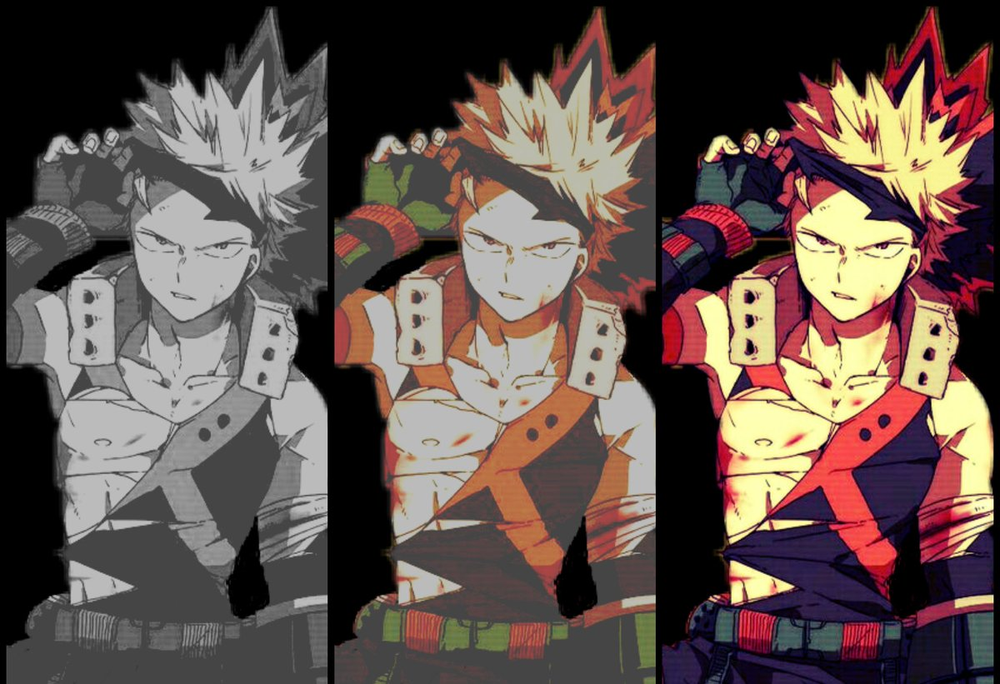

Bakugo
Quirk: Explosion
Bakugo and Midoriya were both friends since childhood. Midoriya
admires Bakugo's quirk as he never was born with a quirk himself.
There relationship is a love/hate friendship. Bakugo wants to pursue
his dream which is to become the number one hero which is Midoriya's
dream as well.
